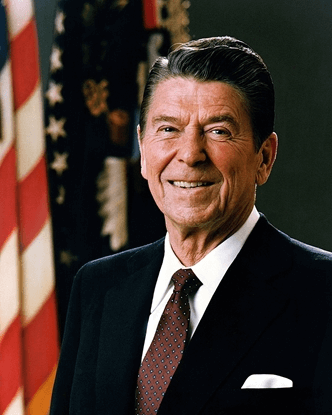

Eventos Históricos
Nos anos 80 e 90, o mundo testemunhou uma série de eventos históricos que moldaram a cultura, a política e a sociedade de maneiras profundas. Desde o fim da Guerra Fria até o surgimento da cultura pop icônica, essas décadas foram verdadeiramente transformadoras. Vamos explorar alguns dos eventos mais notáveis que definiram os anos 80 e 90.
A Era de Reagan: Política Conservadora e Fim da Guerra Fria nos Anos 80"
Nos anos 80, a presidência de Ronald Reagan nos Estados Unidos marcou uma era de significativas mudanças políticas e econômicas. Ele foi eleito presidente em 1980, com a promessa de uma abordagem mais conservadora em relação ao governo. Uma das políticas mais notáveis de seu governo foi a chamada "Reaganomics", que enfatizava cortes de impostos e desregulamentação. Essas políticas econômicas buscavam estimular o crescimento econômico e reduzir o papel do governo na economia.
Além disso, os anos 80 testemunharam o aumento das tensões da Guerra Fria entre os Estados Unidos e a União Soviética. No entanto, essa década também viu o início de mudanças significativas nas relações entre as superpotências, com negociações de controle de armas e a perestroika na União Soviética, liderada por Mikhail Gorbachev.
A eleição de Reagan e os eventos relacionados à Guerra Fria moldaram os rumos da política internacional, contribuindo para o eventual colapso do bloco soviético e o fim da Guerra Fria nos anos 90. Essa década foi um período crucial na história contemporânea, repleto de transformações políticas e econômicas que ainda têm impacto nos dias de hoje.
Queda do Muro de Berlim (1989)
A "Queda do Muro de Berlim" foi um evento histórico significativo que ocorreu em 9 de novembro de 1989. Esse muro, conhecido como o Muro de Berlim, separava a cidade de Berlim Ocidental, controlada pelos Aliados ocidentais e pela República Federal da Alemanha (Alemanha Ocidental), da Berlim Oriental, controlada pela União Soviética e pela República Democrática Alemã (Alemanha Oriental).
Ao longo de décadas, o Muro de Berlim representou não apenas uma divisão física, mas também simbólica entre o mundo ocidental democrático e o bloco oriental comunista durante a Guerra Fria. A queda do muro foi o resultado de crescentes pressões políticas e sociais e da demanda por liberdade por parte dos cidadãos da Alemanha Oriental.
A queda do Muro de Berlim ocorreu quando os alemães orientais, após muitos anos de restrições e separação, ganharam o direito de viajar livremente para o lado ocidental da cidade. Milhares de pessoas se reuniram nas fronteiras do muro e começaram a derrubá-lo com picaretas e martelos, simbolizando o colapso da divisão entre as Alemanhas Oriental e Ocidental. Esse evento histórico marcou não apenas a reunificação da Alemanha, que ocorreu em 3 de outubro de 1990, mas também o fim da Guerra Fria e a queda do comunismo na Europa Oriental.
A queda do Muro de Berlim é lembrada como um momento histórico de esperança, mudança e reunificação, simbolizando o poder do desejo humano por liberdade e unidade. Esse acontecimento teve um impacto duradouro na política e nas relações internacionais, marcando o início de uma nova era na Europa e no mundo.
Revolução Iraniana (1979)
A Revolução Iraniana de 1979 foi um movimento transformador que culminou na queda do regime monárquico do Xá Mohammad Reza Pahlavi e no estabelecimento da República Islâmica do Irã, liderada pelo Aiatolá Ruhollah Khomeini. Esse evento marcou uma profunda mudança na política e nas relações internacionais, com impactos duradouros na região do Oriente Médio e no cenário global.
A Revolução Iraniana foi um dos eventos mais significativos do século XX e teve várias implicações. Durante os anos 80, o Irã enfrentou instabilidade política e tensões regionais em decorrência da revolução. O país adotou uma orientação mais radical, com ênfase na aplicação estrita da lei islâmica e na oposição aos valores ocidentais.
Isso levou a uma série de desafios e conflitos, incluindo a Crise dos Reféns Americanos (1979-1981), em que 52 diplomatas americanos foram mantidos reféns na embaixada dos EUA em Teerã por mais de um ano. Esses eventos contribuíram para um ambiente de tensão no Oriente Médio durante os anos 80.
Internamente, a Revolução Iraniana resultou em mudanças sociais e políticas significativas, incluindo a reestruturação do sistema judicial e educacional do país. Além disso, o Irã começou a desempenhar um papel mais ativo na política regional, apoiando grupos militantes em conflitos como a Guerra Irã-Iraque (1980-1988).
Essa revolução também teve um impacto duradouro nas relações entre o Irã e outros países, especialmente os Estados Unidos. As tensões entre essas nações persistiram por décadas e moldaram o cenário geopolítico do Oriente Médio durante os anos 80 e além.
A Guerra Irã-Iraque (1980-1988):
Durante a década de 1980, uma das guerras mais sangrentas da história moderna aconteceu entre o Irã e o Iraque. O conflito começou em setembro de 1980, quando o Iraque, liderado por Saddam Hussein, invadiu o Irã. As tensões entre os dois países já existiam há anos devido a disputas territoriais e rivalidades regionais.
A guerra durou oito anos e resultou em um grande número de mortes de ambos os lados, bem como em danos econômicos significativos para ambas as nações. A guerra também teve impactos duradouros na região do Oriente Médio e nas relações geopolíticas globais.
Durante o conflito, várias nações forneceram apoio militar e financeiro aos lados opostos, exacerbando ainda mais a complexidade do conflito. A guerra finalmente chegou ao fim em agosto de 1988, quando um cessar-fogo foi declarado.
Esse conflito teve implicações significativas para a política regional e global e deixou cicatrizes profundas nas sociedades do Irã e do Iraque. Foi um evento marcante da década de 1980 que teve um impacto duradouro na história moderna.
Plano Cruzado (1986)
O Plano Cruzado foi uma política econômica implementada no Brasil em 1986, durante a presidência de José Sarney, como uma tentativa de controlar a hiperinflação que assolava o país naquela época. O plano introduziu uma nova moeda, o Cruzado, e congelou preços e salários, além de implementar uma série de medidas para estabilizar a economia.
Uma das características marcantes do Plano Cruzado foi a criação da Unidade Real de Valor (URV), que serviu como uma espécie de moeda virtual para indexar preços e contratos. O objetivo era eliminar os efeitos da inflação galopante que prejudicavam a economia brasileira.
Inicialmente, o Plano Cruzado obteve sucesso em conter a inflação e ganhou apoio popular. No entanto, ao longo do tempo, os desequilíbrios econômicos começaram a surgir, e a hiperinflação voltou a assombrar o Brasil, levando ao fracasso do plano.
Apesar de suas limitações e do resultado a longo prazo, o Plano Cruzado ainda é lembrado como um importante capítulo da história econômica do Brasil e um exemplo das dificuldades enfrentadas na tentativa de controlar a inflação em um ambiente econômico desafiador.